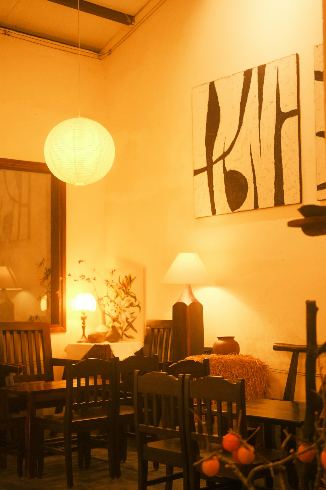
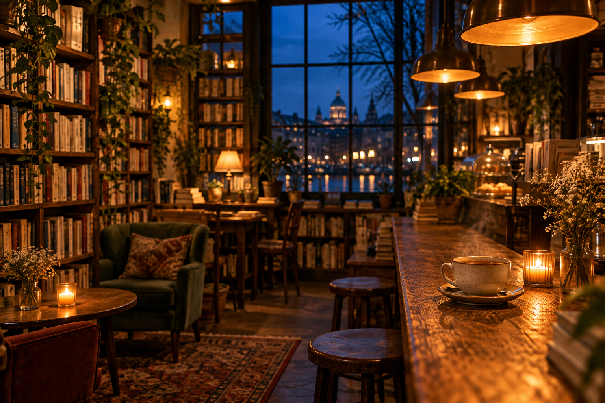
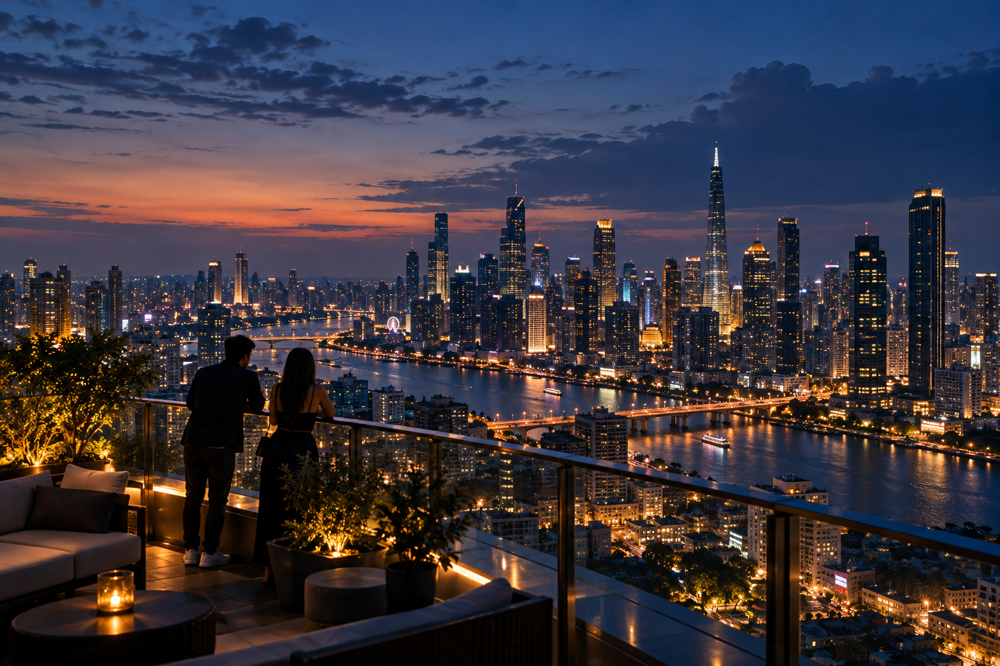
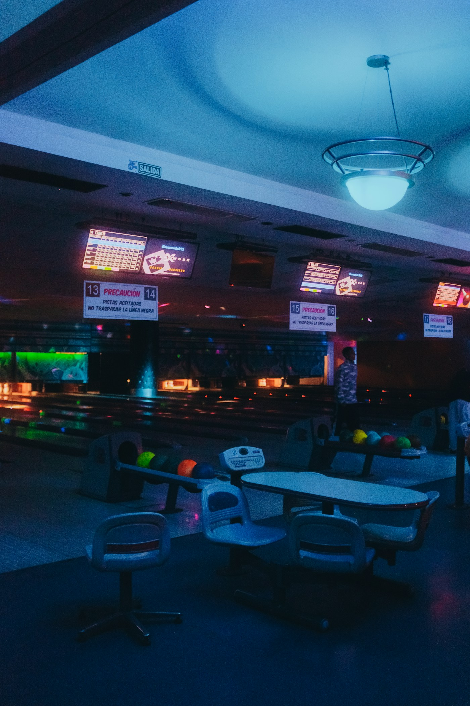
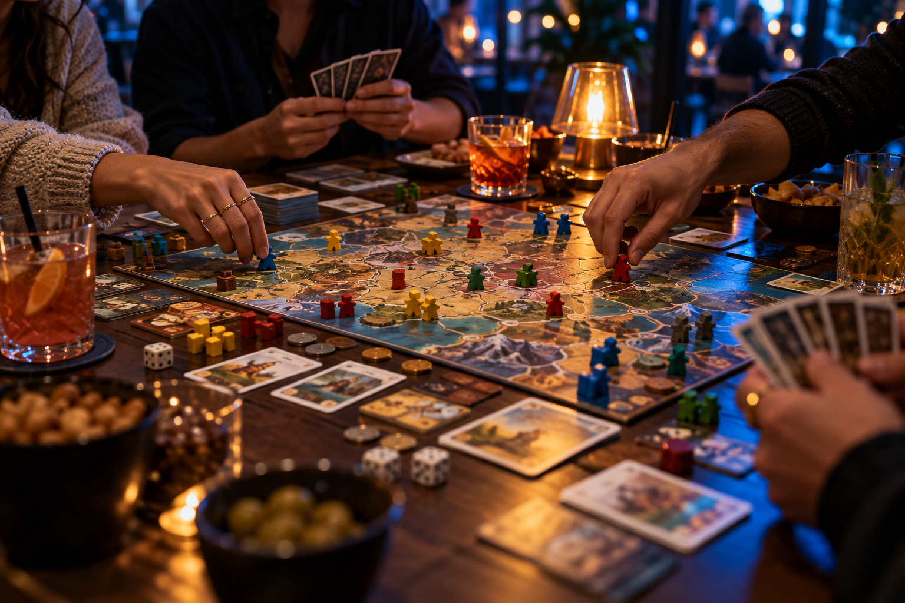

Coffee & conversation
Amber Corner
A warm drink, a small table and time to catch up. Best for a low-key evening with one friend.
Start with the mood. Pick a place. Keep the plan simple.
A concept collection: place names and budgets are illustrative, not real venue listings.

A warm drink, a small table and time to catch up. Best for a low-key evening with one friend.

Bring a book, order tea and enjoy a slower evening. A simple solo plan when you want a little quiet.
Take a relaxed walk through well-lit public streets. Keep the route short and enjoy the city lights.

Find a public street-level viewpoint and catch the evening colours. A small detour with a camera or a friend.
Budget key: ₸ = a little · ₸₸ = moderate · ₸₸₸ = a bigger treat. Compare the options
02 / Get together

Neon Lanes
Pick your team and play a couple of rounds. A lively choice for a group that wants something to do.

The Game Table
Choose a familiar game and settle in with friends. The fun is in the company, not the winning.